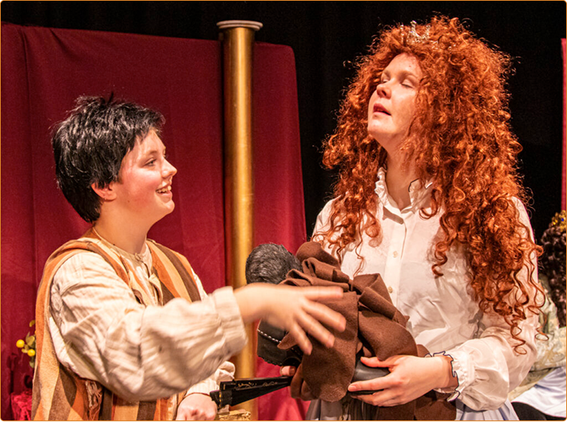
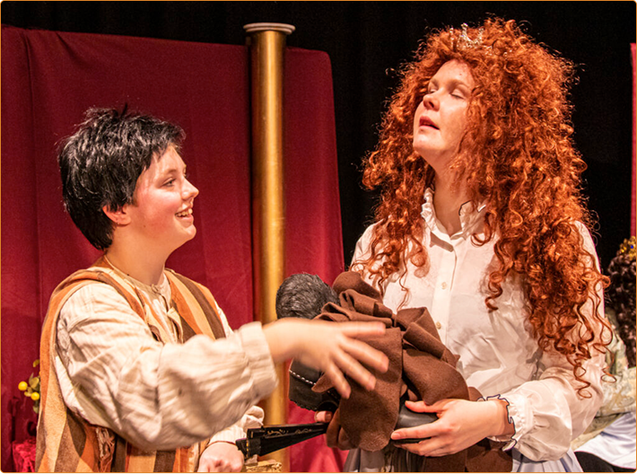

Hvem passer forestillingen til?
- Børn fra 6 år
- Familier, der elsker nordisk fortælling
- Forældre og bedsteforældre

Teaterforestillingen
12. februar 2025
Musikhuset Esbjerg
For børn fra 6 år
Billetter kun 80 kr
En stille, rørende og håbefuld fortælling om mod, kærlighed og sammenhold.
Perfekt til familier, der ønsker et roligt øjeblik sammen midt i vinterferien
12. februar 2026
Musik Huset
Esbjerg
“Et teaterbesøg i vinterferien er en dejlig måde at give børnene en pause fra skærme – og opleve noget sammen”
Anna (mor)
“Vi glæder os til en oplevelse, vi kan tale om sammen bagefter.”
Gordon (far)
“Jeg læste historien for min søn engang. Nu skal mine børnebørn også høre den.”
Ida-Maria (bestemor)
SkarnTyden er Esbjergs ældste amatørteater - dedikeret til at skabe nærværende og hjertevarme forestillinger for lokalsamfundet.
Læs mere

 
